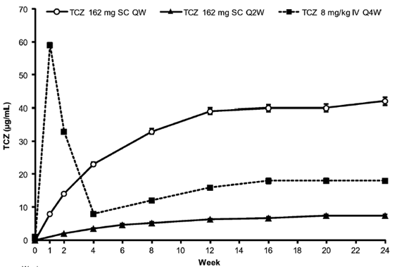

7. KEVはTNF阻害薬に優位性を示したIL-6をTGとする初のSC製剤？

KEVはMONARCH試験で世界で最も売れているヒュミラに優位性を示したIL-6をTGとする初のSC製剤です（単剤比較）。ACTのADACTA試験も同様のデザインでヒュミラを対象にしていますが、IV製剤のデータなのでSC製剤としては減量もできるKEVの方が上ですね。

確かにADACTA試験はIV製剤のデータですが、初めてTNF阻害薬に優越性を示したデータであり、MONARCHはADACTAを真似したものでインパクトが全く異なります。
加えて、IV製剤とSC製剤の非劣性は既にMUSASHI試験、SUMMACTA試験で国内外ともに確認されています。
また、新たに適応となったSC製剤のQW投与ではIV製剤よりも高い血中濃度を得ることが可能であり、患者さんのライフスタイルや状態によって投与方法や投与間隔の選択をすることがACTでは可能です。しかもACTの方が断然薬価が安いですね。

Hisham Abdallah, et al. The Journal of Clinical Pharmacology. 2017, 57(4) 459–468